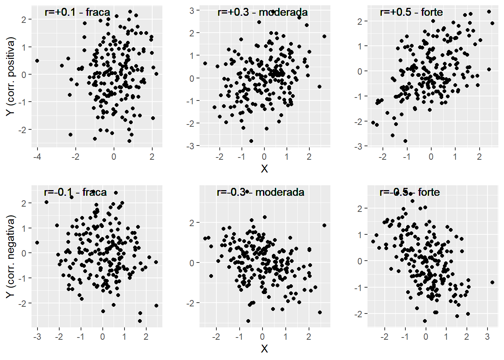
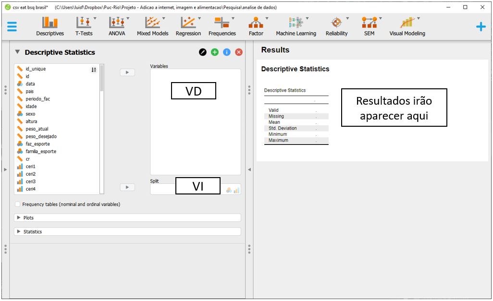
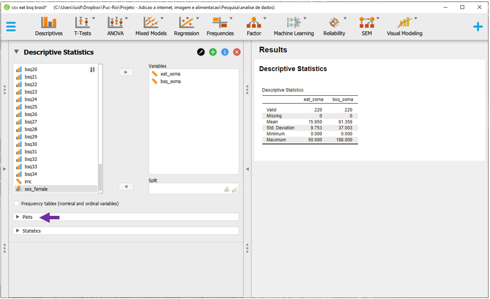
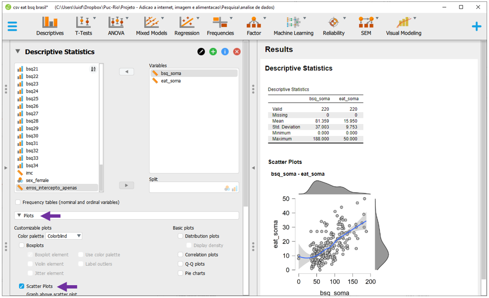
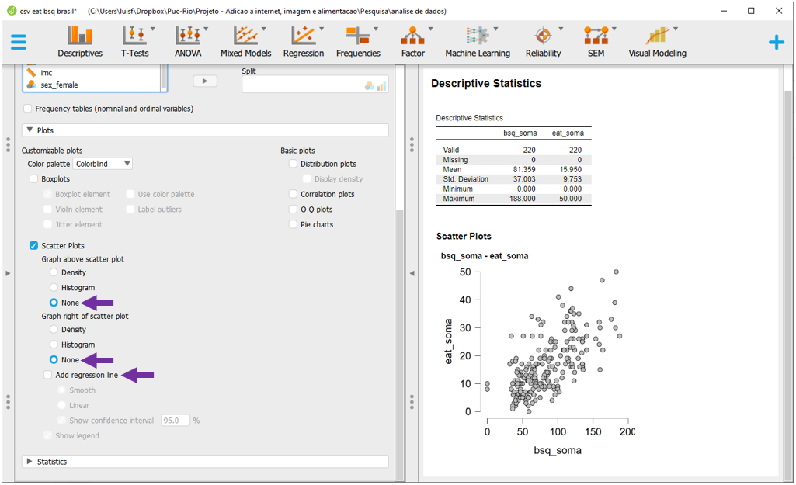
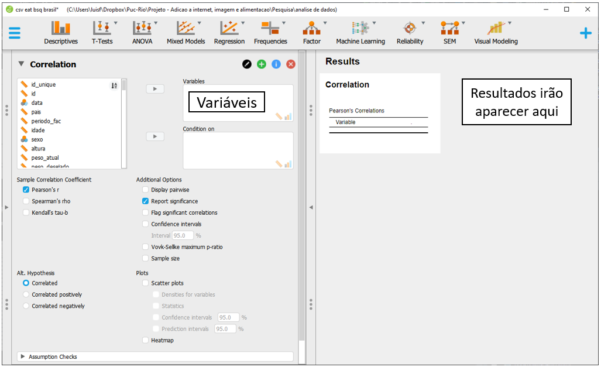

Cap. 15 Correlação
Objetivos do capítulo
1. Apresentar apectos do relacionamento entre variáveis
2. Demonstrar a correlação de Pearson
3. Oferecer um guia de como interpretar as correlações
A correlação é um procedimento estatístico utilizado para verificar a relação entre duas variáveis. Há diferentes técnicas correlacionais e a maioria busca medir a força e a direção da associação linear desse relacionamento.
O nível de medida das variáveis indica qual técnica correlacional deve ser empregada. A tabela a seguir apresenta uma síntese inicial:
| Nível de medida | Correlação / Coeficiente |
|---|---|
| Ambas as variáveis são intervalares | Correlação Produto momento de Pearson |
| Ambas as variáveis são ordinais | Correlação de Spearman |
| Ambas as variáveis são nominais | Coeficiente Phi |
O Coeficiente de Correlação de Pearson é um dos mais frequentemente calculados em Psicologia e outras áreas empíricas e será demonstrado neste capítulo. É importante, no entanto, ter em mente que algumas áreas específicas outros coeficientes tendem a ser utilizados. Como exemplo, é bem típico em Psicometria trabalhar com variáveis categóricas e, com isso, calcular correlações tetracóricas ou policóricas, que não serão abordadas aqui.
A correlação de Pearson é apresentada por \(\rho\) ou r, e é formada por um valor numérico e um sinal. Enquanto o valor numérico indica a força do relacionamento bivariado, o sinal indica a natureza proporcional ou inversamente proporcional desse relacionamento. A tabela abaixo descreve as possíveis interpretações (J. Cohen, 1988).
| Valor | Sinal Positivo (+) | Sinal Negativo (-) |
|---|---|---|
| 0.1 | Fraca positiva | Fraca negativa |
| 0.3 | Moderada positiva | Moderada negativa |
| 0.5 | Forte positiva | Forte negativa |
O gráfico de dispersão é uma excelente forma de ilustrar o relacionamento bivariado e as imagens abaixo demonstram tais conceitos.

Para realização da Correlação de Pearson, é necessário que ambas as variáveis sejam contínuas e apresentem relacionamento linear. O Coeficiente tem as seguintes propriedades:
- É limitado entre -1 e +1, com 0 indicando ausência de correlação
- O sinal indica a natureza, enquanto o número a força
- A correlação de uma variável com ela própria é igual a 1
- É simétrico, ou seja,
r(x,y) = r(y,x)
- É adimensional e invariante em transformações lineares
- Sensível aos outliers
- Não indica causalidade
15.1 Pesquisa
A base desta pesquisa está disponível em formato R (Rdata) e em CSV, que é lido pelo JASP. Clique na opção desejada.
R Base: Imagem corporal
Base JASP : Base CSV - csv eat bsq brasil
Vamos utilizar a pesquisa intitulada “Aspects Related to Body Image and Eating Behaviors in Healthy Brazilian Undergraduate Students”, publicada em 2018 no Global Journal of Educational Studies, que sou coautor.
Um dos objetivos dessa pesquisa foi verificar a relação entre percepção da imagem corporal e transtornos alimentares. Esse artigo contou com a utilização de escalas aplicadas em 219 participantes no Brasil. Para acessar características relacionados aos Transtornos alimentares, a escala EAT-26 foi aplicada. Já para aspectos da imagem corporal, a escala BSQ-34 foi aplicada. Em ambas as escalas, quão maior o valor, mais frequentes ou intensos são os sintomas relacionados a distorções na percepção da imagem corporal e em disfunções no comportamento alimentar.
15.2 Execução no R
A primeira etapa da análise consiste na apresentação de tabelas e gráficos que possam auxiliar na interpretação dos resultados. Abaixo há uma tabela inicial com os resultados das escalas.
arsenal::tableby(~eat_soma + bsq_soma,
test = FALSE, dados_brasil) %>%
summary() | Overall (N=220) | |
|---|---|
| eat_soma | |
| Mean (SD) | 15.950 (9.753) |
| Range | 0.000 - 50.000 |
| bsq_soma | |
| Mean (SD) | 81.359 (37.003) |
| Range | 0.000 - 188.000 |
Após isso realizado, a apresentação do gráfico de dispersão é fundamental para melhor entendimento do relacionamento entre as variáveis, especialmente para verificar se ele linear ou não. Apesar de técnicas correlacionais não elegerem, formalmente, uma VI e uma VD, com muita frequência, se usa o eixo X para colocar a variável que se assume como independente e Y para apresentar os resultados da variável assumida como dependente.
ggplot(dados_brasil, aes(x = bsq_soma, y = eat_soma)) +
labs(x = "Imagem corporal (BSQ)",
Y = "Disfunção alimentar (EAT)") +
geom_jitter()
O gráfico indica que as duas variáveis são relacionadas. Apesar do padrão deste relacionamento não ser estritamente linear, é possível testar formalmente a correlação entre ambas as variáveis,
Isso pode ser feito pela função cor.test, que é nativa do R.
cor.test(dados_brasil$eat_soma, dados_brasil$bsq_soma) %>% pander()| Test statistic | df | P value | Alternative hypothesis | cor |
|---|---|---|---|---|
| 13.52 | 218 | 1.156e-30 * * * | two.sided | 0.6754 |
Os resultados permitem concluir que a correlação é positiva e forte (r = 0.675), além de significativa (p < 0.001). Isso indica que ambas as variáveis covariam de maneira proporcional, em que valores altos em uma tendem a acompanhar valores altos em outra. É importante atentar que esse relacionamento não indica causalidade e, dessa forma, essa covariação pode ser explicada por diferentes fatores não analisados ou controlados neste método, tal como previamente apresentado nas características de delineamentos observacionais.
A correlação de Pearson não depende estritamente da normalidade das variáveis, apesar desse tema ser bastante discutido. Dessa forma, não há pressupostos para se checar além dos já discutidos no decorrer deste capítulo.
15.3 Execução no JASP
Para executar as rotinas, será necessário carregar a base intitulada “csv eat bsq brasil.” Após fazer isso, para realizar tabelas e gráficos descritivos, deve-se clicar em Descriptives , na parte superior do programa.
 Ao clicar nesta opção, será possível eleger as variáveis que irão ser analisadas e as variáveis que irão funcionar como agrupadores. Apesar de na correlação os conceitos de VI e VD não serem formalmente empregados, a lista
Ao clicar nesta opção, será possível eleger as variáveis que irão ser analisadas e as variáveis que irão funcionar como agrupadores. Apesar de na correlação os conceitos de VI e VD não serem formalmente empregados, a lista Variables costuma reunir as variáveis dependentes, enquanto a seção Split costuma receber a variável independente. É importante atentar à opção Frequency tables (nominal and ordinal), que deve ser marcada quando o nível de medida da variável de interesse for nominal ou ordinal.

Será necessário arrastar tanto eat_soma como bsq_soma para o espaço de Variables. Apenas para melhor apresentação dos resultados, é importante que a primeira variável da lista seja bsq_soma. Ao fazer isso, o JASP automaticamente irá preencher a tabela previamente exposta com os valores estatísticos obtidos. A média e o desvio-padrão indicam a posição típica dos dados e o afastamento esperado desta localização.

Em seguida, para apresentar graficamente este relacionamento, será necessário clicar na opção Plots.

Dentro das opções, será possível selecionar Scatter Plots. O gráfico aparecerá na parte inferior do lado direito e trará diferentes informações estatísticas da relação entre aspectos da percepção da imagem corporal e possíveis disfunções alimentares dos participantes.

Por padrão, o JASP irá adicionar vários elementos extras no gráfico. Entretanto, para fins pedagógicos, o importante é conseguir notar o relacionamento que ambas as variáveis apresentam. Para realizar um gráfico mais simples, será necessário desmarcar (ou clicar em none) as opções Graph above scatter plot, Graph righ of scatter plot e Add regression line.

Para execução da correlação, será necessário clicar em Regression e Correlation.
 Ao realizar isso, a tela a ser exibida será próxima à ìmagem abaixo. Por padrão, em
Ao realizar isso, a tela a ser exibida será próxima à ìmagem abaixo. Por padrão, em Sample Correlation, o JASP já deixa marcada a opção Pearson's r. Além disso, em Additional Options, a opção Report significance também estará previamente ativada`.

O espaço Variables é o local onde todas as variáveis serão colocadas e o espaço Condition on não será utilizado no momento. Ao inserir o eat_soma e o bsq_soma, o JASP automaticamente irá realizar as contas e apresentar os resultados.
O coeficiente de correlação e o valor de p serão apresentados em uma lista. No entanto, algumas condições são importantes neste resultado e devem ser explicadas:
- As variáveis serão alocadas tanto nas linhas, como nas colunas
- Todas as correlações de uma variável com ela própria será igual a 1 e o JASP não apresentará
- A ordem das correlações não interfere no resultado e o JASP somente apresentará uma correlação
A interpretação dos resultados deve ser feita com base no coeficiente de correlação e no valor de P. Há um grande debate na literatura sobre a necessidade de normalidade na Correlação de Pearson, com grande parte dos argumentos apontam que ela não depende estritamente da normalidade das variáveis. Dessa maneira, não há a necessidade de avaliar outros pressupostos além dos já discutidos no decorrer deste capítulo.

15.4 Escrita dos resultados
Os resultados serão escritos apresentado os três principais ingredientes da correlação, que são o resultado e o sinal do coeficiente de correlação de Pearson, além do valor de p. O estilo da escrita é baseado nas recomendações da American Psychological Association (APA). Como os resultados do R e do JASP foram um pouco diferentes nas comparações pareadas, o R será utilizado como principal.
Como escrever os resultados
A correlação entre o comportamento alimentar (EAT-26) e a percepção corporal (BSQ-34) foi calculada pelo Coeficiente Produto-Momento de Pearson. Os resultados concluíram que existe uma correlação positiva, forte e significativa entre ambas as variáveis (r = 0.675, p < 0.001), indicando que as duas variáveis covariam de maneira proporcional.
15.5 Resumo
- O termo correlação diz respeito a um conjunto de métodos que visa verificar a direção e a força do relacionamento entre duas variáveis
- A correlação de Pearson assume que ambas têm um relacionamento linear
- O coeficiente obtido indica a direção (por um sinal positivo ou negativo) e a força (por um número entre -1 e +1) do relacionamento bivariado
- Correlação não indica causalidade
15.6 Pesquisas adicionais
- Perception of an ambiguous figure is affected by own-age social biases (DOI: 10.1038/s41598-018-31129-7)
Nesse estudo, 393 participantes de idades variadas foram recrutados e viram uma imagem ambígua em que é possível identificar tanto uma moça jovem, como uma senhora de idade. Os participantes deveriam olhar a imagem e indicar a idade a pessoa. Com estes resultados, os pesquisadores calcularam a correlação entre a idade do participante e a idade que as pessoas deram à pessoa.
15.7 Questões
(Retirado de Analista de Comercialização e Logística Júnior Transporte Marítimo, Petrobrás, CESGRANRIO, 2012) A fim de avaliar a correlação linear entre duas variáveis de interesse, X (covariável) e Y (variável resposta), um pesquisador conduz 10 experimentos, obtendo o coeficiente de correlação r = 0,8. Quanto da variabilidade da variável Y NÃO é explicada pela variável X?
a) 80%
b) 64%
c) 36%
d) 20%
e) 2%(Retirado de Analista de Comercialização e Logística Júnior Transporte Marítimo, Petrobrás, CESGRANRIO, 2012) Se alguém deseja comparar a variabilidade de dois grupos de dados com variâncias e médias diferentes, a medida estatística apropriada para tal é a(o):
a) covariância entre os grupos.
b) comparação simples entre os dois desvios padrões dos grupos.
c) média dos desvios padrões dos dois grupos ponderados pelos tamanhos das amostras.
d) coeficiente de variação.
e) coeficiente de correlação entre os grupos.
Gabarito: 1-c; 2-d